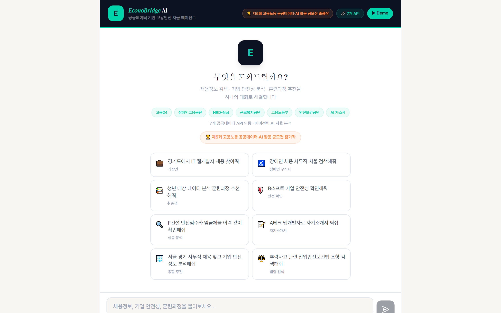
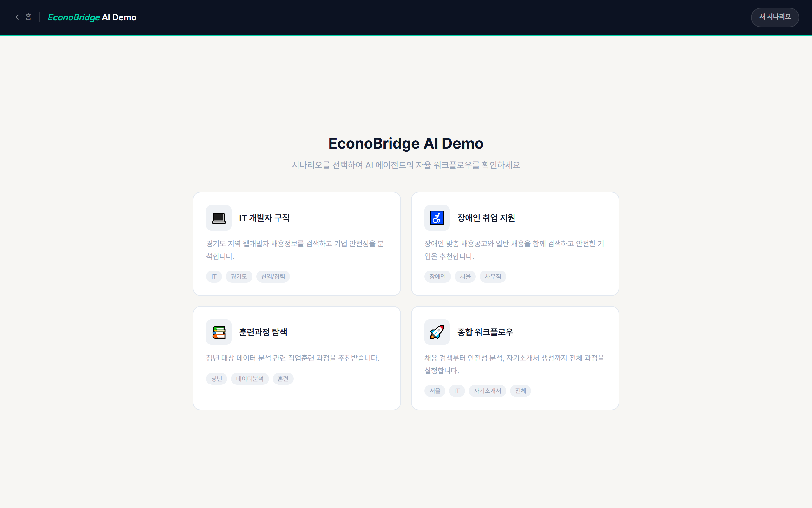

공공데이터 7종을 자율적으로 호출하여 채용정보 검색부터 기업 안전점수 산출까지
한 번에 수행하는 AI 에이전트 웹 서비스
| 성 명 | 박용환 (朴容煥) | 생년월일 | 1970. 11. 06. |
| 소 속 | 크리에이티브 넥서스 / 대표 | 사업체 | 경인블루저널 (개인사업자) |
| 연락처 | 010-7939-3123 | 이메일 | sanoramyun8@gmail.com |
| 주 소 | 경기도 용인시 수지구 성복2로 126, LG빌리지3차 303동 801호 (우 16851) | ||
우리나라는 OECD 국가 중 산업재해 사망률이 여전히 상위권에 머무르고 있으며, 2022년 중대재해처벌법 시행 이후에도 중대산업사고가 지속 발생하고 있다. 그러나 구직 단계에서 기업의 안전성을 사전에 확인할 수 있는 수단은 사실상 전무하다. 구직자는 급여·복리후생 정보는 쉽게 비교하지만, 해당 기업의 산재 이력·중대재해 발생 여부·임금체불 명단 등재 사실 등은 알기 어렵다.
기업 안전 관련 정보는 이미 공공데이터로 존재한다. 근로복지공단의 산재처리현황, 고용노동부의 중대산업사고 발생현황과 임금체불 명단, 한국산업안전보건공단의 안전보건법령 등이 그것이다. 그러나 이들 데이터는 각기 다른 기관의 서로 다른 시스템에 분산되어 있어, 일반 구직자가 통합적으로 조회·비교하는 것은 현실적으로 불가능하다. 데이터는 있으나 활용되지 못하는 "정보 비대칭" 상태다.
EconoBridge AI는 자연어 한 문장의 입력만으로 AI 에이전트가 7개 공공데이터 API를 자율적으로 호출하여 다음을 자동 수행한다.
EconoBridge AI는 Anthropic Claude Opus 4.7(2026년 출시)을 메인 추론 엔진으로 채택하고, Vercel AI SDK 6의 ToolLoopAgent 위에서 ReAct(Reasoning + Acting) 패턴으로 동작한다. 사용자가 한 번 질문하면, 에이전트가 스스로 판단하여 최대 10단계까지 도구를 자율적으로 연쇄 호출한다. 단순 검색·요약을 넘어 "의사결정형 에이전트"로 작동하는 것이 본 서비스의 기술적 특징이다.
근로복지공단 산재처리현황과 고용노동부 중대산업사고 데이터를 교차 분석하여 100점 만점 안전점수를 산출한다. 이 알고리즘은 실제 코드(lib/tools/safety-check.ts)로 구현되어 작동한다.
| # | 도구명 | 데이터 출처 (제공기관) | 데이터명 |
|---|---|---|---|
| 1 | search_worknet_jobs | 한국고용정보원 | 워크넷 채용정보 OpenAPI |
| 2 | search_disability_jobs | 한국장애인고용공단 (KEAD) | 장애인 채용정보 |
| 3 | search_training_courses | 한국산업인력공단 (HRD-K) | HRD-Net 훈련과정 정보 |
| 4 | check_company_safety | 근로복지공단 + 고용노동부 | 산재처리현황 + 중대산업사고 발생현황 |
| 5 | check_wage_violations | 고용노동부 | 체불사업주 명단 공개 |
| 6 | search_safety_laws | 한국산업안전보건공단 (KOSHA) | 안전보건법령정보 |
| 7 | generate_cover_letter | 자체 LLM 생성 | NCS 직무능력표준 (한국산업인력공단) 기반 |
기존 채용 플랫폼은 단일 데이터셋(채용공고)만 활용하지만, EconoBridge AI는 채용 + 산재 + 임금체불 + 훈련을 자율적으로 교차 호출한다. AI 에이전트가 채용공고에서 기업명을 추출하면, 동일 기업명을 키로 산재이력·임금체불 명단을 자동 조회하여 단일 응답에 종합한다.
| 구분 | 활용 AI 기술 | 모델 / 플랫폼 | 역할 |
|---|---|---|---|
| 메인 추론 | 생성형 LLM | Anthropic Claude Opus 4.7 (claude-opus-4-7) | 자연어 의도 분석, 도구 선택, 결과 종합 |
| 자기소개서 생성 | 생성형 LLM | Anthropic Claude Haiku 4.5 (claude-haiku-4-5) | NCS 기반 자소서 초안 (속도·비용 최적) |
| 에이전트 프레임워크 | ToolLoopAgent | Vercel AI SDK 6.0.174 | ReAct 패턴 자율 도구 호출 (최대 10단계) |
| 스키마 검증 | Zod | zod 3.25 | 도구 입출력 타입 안전성 보장 |
| UI 스트리밍 | UIMessageStream | Vercel AI SDK 6 | 실시간 단계별 스트리밍 응답 |
기존 챗봇이 "단일 쿼리 → 단일 응답"이라면, EconoBridge AI는 "단일 질의 → AI의 자율적 사고·도구 호출·결과 종합" 의 다단계 루프로 동작한다.
이 모든 단계는 사용자의 추가 입력 없이 AI가 자율적으로 결정한다. Claude Opus 4.7의 향상된 도구 사용(Tool Use) 능력은 이러한 다단계 자율 워크플로의 안정성을 확보하는 핵심 기반이다.
본 서비스의 응모자 박용환은 공모전 전문 기획자(월 10건 이상 참여) 이자 커널 아카데미 AI 부트캠프 15기 수료자로, AI 기반 공익 서비스 기획·구축에 집중하고 있다. 본 EconoBridge AI는 개인사업자 경인블루저널(2026년 1월 개업, 정보통신업) 의 미디어·데이터 사업 노선과 연계하여 사업화를 추진한다.
| 항목 | 내용 |
|---|---|
| 응모자 | 박용환 (1970년생, 단독 응모, 예비창업자) |
| 소속 | 크리에이티브 넥서스 / 대표 |
| 사업체 | 경인블루저널 (개인사업자 849-01-03618, 정보통신업) |
| 경력 | 한국연구재단 K-문샷 우수상, 조경 비전 2050 통과 외 다수 공모전 수상 |
| 역량 | 아이디어 기획, AI 활용 제안서, 프로토타입 기획·구현 |
| 단계 | 기간 | 주요 활동 |
|---|---|---|
| 1단계 | 2026.05~09 (공모전·검증) |
본 공모전 수상으로 사회적 인지도 확보 → 산업안전상생재단·근로복지공단을 PoC 파트너로 확보 → 안전점수 D등급 기업 컨설팅 연계 가설 검증 |
| 2단계 | 2026.10~2027.06 (정식 서비스화) |
경인블루저널 사업영역 확장 또는 별도 법인 설립 검토 → 공공데이터 OpenAPI 정식 키 발급·트래픽 인프라 확보 → 사회적기업·예비사회적기업 인증 추진 |
| 3단계 | 2027.하반기~ (SaaS 모델) |
기업용 안전관리 대시보드 SaaS (B2B) → 지자체용 지역 안전점수 모니터링 (B2G) → 구직자용 무료 + 기업용 유료의 양면 시장 구조 확립 |
본 응모자는 이미 2026년 사회적기업 창업지원사업(초기창업형) 과 각종 공공 데이터·AI 공모전에 병행 참여 중이며, EconoBridge AI는 그 핵심 기둥 사업으로 자리매김할 예정이다. 응모자는 단순 시제품을 넘어 즉시 운영 가능한 라이브 서비스(https://econobridge-ai.vercel.app/)를 이미 배포 완료하였으며, 이는 공모전 이후 사업 추진의 기술적·운영적 즉시성을 입증한다.
| 구분 | 워크넷 | 사람인 / 잡코리아 | KOSHA-Net | EconoBridge AI |
|---|---|---|---|---|
| 운영 주체 | 고용노동부 | 민간 | 안전보건공단 | 개인 (예비창업자) |
| 채용정보 검색 | ○ | ○ | ✗ | ○ (워크넷+KEAD) |
| 기업 안전점수 | ✗ | ✗ | ✗ | ○ (자체 산출, 100점) |
| 산재 이력 조회 | ✗ | ✗ | △ (제한적) | ○ (자동 통합) |
| 임금체불 교차 | ✗ | ✗ | ✗ | ○ (자동 통합) |
| 안전보건법령 안내 | ✗ | ✗ | ○ | ○ (AI 자동 인용) |
| 훈련과정 추천 | △ | ✗ | ✗ | ○ (HRD-Net) |
| 자기소개서 생성 | ✗ | △ (유료) | ✗ | ○ (NCS 무료) |
| AI 자율 에이전트 | ✗ | ✗ | ✗ | ○ Claude Opus 4.7 |
| 다단계 자율 호출 | ✗ | ✗ | ✗ | ○ (최대 10단계) |
| 채널 | 전략 |
|---|---|
| B2C (구직자) | 경인블루저널 미디어 채널 활용 / 청년·장애인·중장년 커뮤니티 협업 / 공공기관 SNS 협업 |
| B2G (공공기관) | 산업안전상생재단·근로복지공단·KEAD와 PoC 파트너십 / 안전점수 D등급 기업 → 재단 컨설팅 연계 모델 |
| B2B (기업) | 본인의 기업 안전점수 모니터링 대시보드 / 안전점수 개선 컨설팅 SaaS |
| 수익원 | 모델 | 단가 (예시) | 비고 |
|---|---|---|---|
| 구직자 무료 서비스 | 광고/제휴 모델 (공공기관 우선) | — | 진입장벽 0, 트래픽 확보 |
| 재단·공공기관 PoC 위탁 | 사업비 수령 | 연 1~3천만원 | 재단 컨설팅 사업 연계 |
| 기업용 안전관리 SaaS | 월 정액제 | 월 9만~29만원 | 자사 안전점수 모니터링·개선안 |
| 컨설팅 매칭 수수료 | 안전컨설팅 매칭 | 건당 5~15% | D등급 기업 → 재단/민간 컨설팅 연결 |
| 데이터 리포트 판매 | 산업·지역 안전 리포트 | 1건 50~200만원 | 경인블루저널 미디어 자산화 |
| 측면 | 기대 효과 |
|---|---|
| 구직자 | 위험 일자리 사전 회피, 정보 비대칭 해소, 취약계층(장애·청년·중장년) 맞춤 지원 |
| 기업 | 안전점수 가시화로 자발적 안전개선 동기 부여 ("안전한 기업이 좋은 인재를 얻는다") |
| 재단·공공기관 | 안전점수 D등급 기업을 컨설팅·교육 사업으로 연계하는 새로운 수요 발굴 채널 |
| 사회 | 중대재해 예방, 공공데이터 활용 우수사례, AI의 공익적 활용 모범사례 |
본 사업계획서의 가장 큰 강점은 아이디어 단계가 아닌 실제 구현·배포 완료된 라이브 서비스라는 점이다.
아래는 https://econobridge-ai.vercel.app/ 에 실제 배포·운영 중인 EconoBridge AI의 화면 캡처이다. 표지 QR 코드 스캔 또는 URL 직접 접속을 통해 동일 화면을 즉시 확인할 수 있다.

▲ 화면 1 — 메인 챗 화면
(공모전 출품작 배지 · 7개 사전 정의 데모 · 자연어 입력)

▲ 화면 2 — /demo 페이지
(사전 정의된 시연 시나리오)
https://econobridge-ai.vercel.app/ 에 접속하시면, 본 화면 캡처와 동일한 라이브 서비스에 즉시 접속하여 자연어 질의 → 7개 도구 자율 호출 → 안전점수 산출의 전 과정을 직접 시연해 보실 수 있습니다.